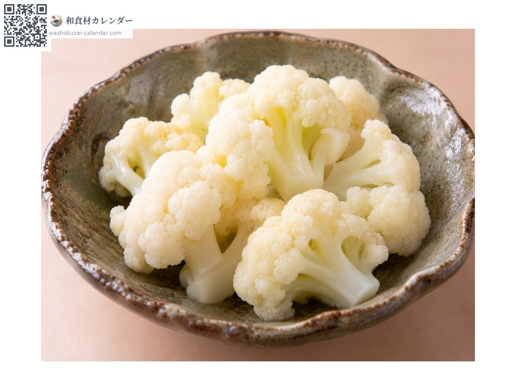
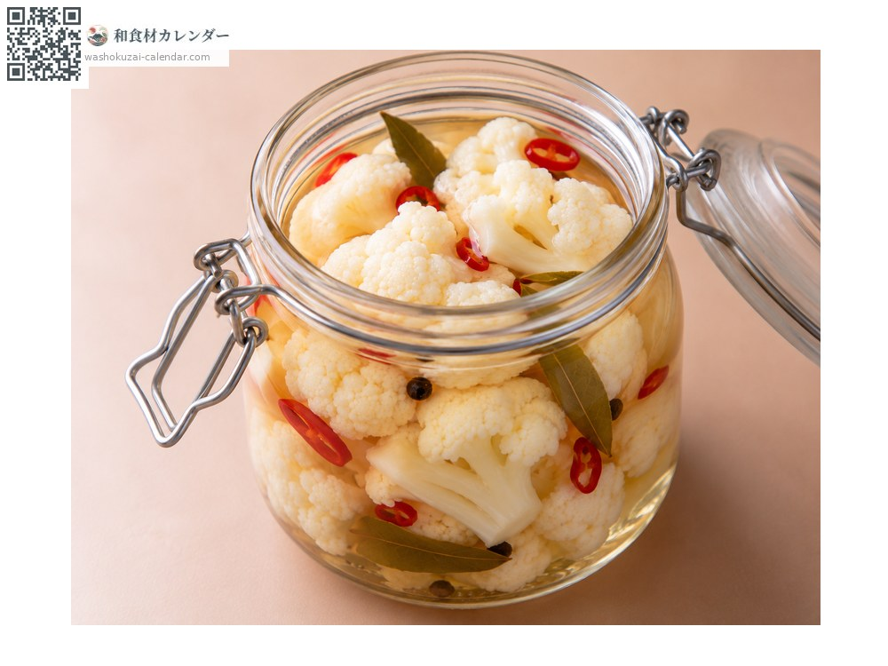
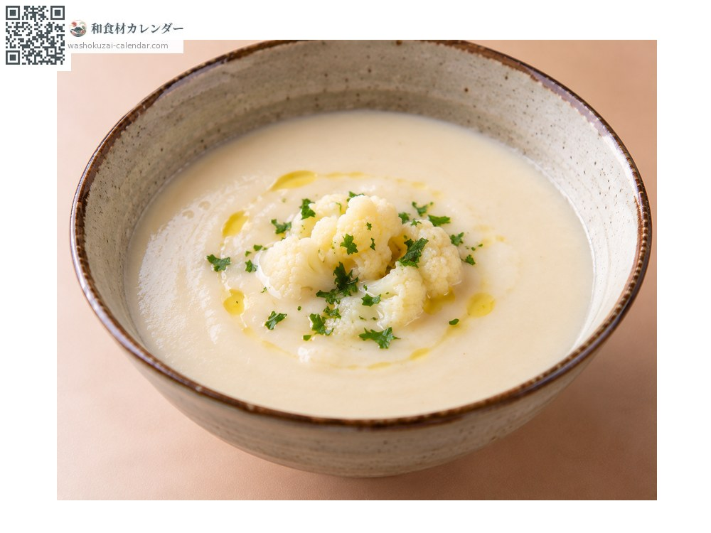
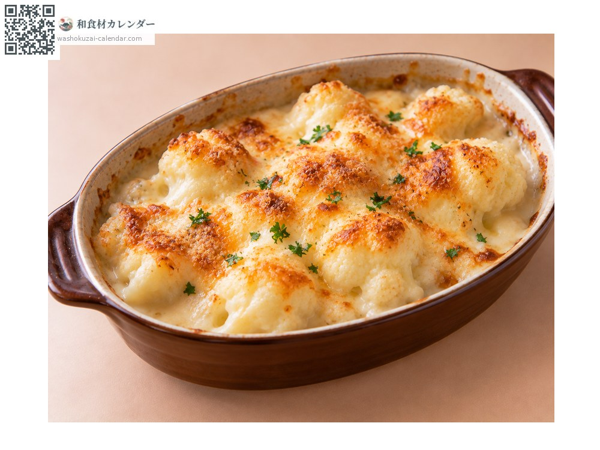

蔬菜
花椰菜（白）
カリフラワー かりふらわー
应季时期为1月、2月、11月、12月

应季时期
1月
2月
3月
4月
5月
6月
7月
8月
9月
10月
11月
12月
应季有供应
烹饪方法

盐水焯水
加入柠檬汁或醋一起烫，成品会洁白漂亮。

腌渍
用甜醋腌渍，口感依然爽脆。

浓汤
煮软后过筛，口感滑顺而高雅。

焗烤
与奶酪一起烤，口感松软。
挑选方法
花蕾洁白紧实、拿起来沉甸甸的。外叶青绿水嫩。
保存方法
装袋冷藏。焯水后也能冷冻。
主要产地
小知识
是青花菜的变种，花蕾之所以洁白是因为用叶子覆盖遮挡阳光。加热后维生素C也不易流失。另有橙色、紫色、黄绿色的品种，螺旋状的罗马花椰菜也属于同类。